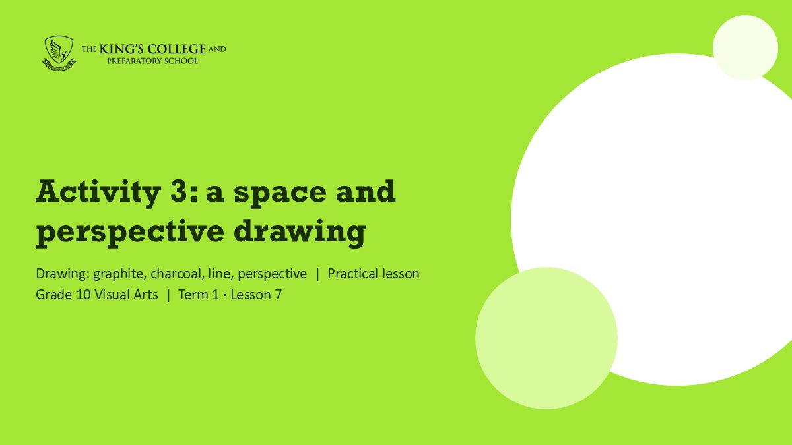

Term 1 · Lesson 7 · Practical lesson
Activity 3: form and perspective
Start here
Today I will
- Arrange forms at different depths with a clear light source
- Use construction and perspective lines to get proportion right
- Build a full tonal range with cast shadows
Think first
Why does a white box in the light never look simply white?
Words to Know
| Word | Meaning |
|---|---|
| Construction lines | Light guide lines used to plan proportion and perspective; in this activity they stay visible. |
| Eye level | The height of your eyes, which sets the horizon line in your drawing. |
| Vanishing point | The point on the horizon where receding parallel lines appear to meet. |
| Ellipse | A circle seen at an angle; the tops and bases of cylinders and cones are ellipses. |
| Focal point | The part of a composition the eye goes to first. |
Slides

Notes
Drawing white geometric forms in perspective: three to five forms arranged at different depths under one strong light, a thumbnail of the set-up, light construction and perspective lines left visible, a full tonal range and cast shadows.
Building the arrangement
- Choose three to five forms: Mix flat-sided and round forms: a box, a cylinder, a cone, a ball.
- Front, middle, back: Place them at different depths and let some overlap.
- One strong light: Light from one side so each form has a light side, a shadow side and a cast shadow.
- Thumbnail: Draw a small plan of the set-up and mark where the light comes from.
Drawing forms that stand on the table
- Eye level: Mark your eye level lightly; boxes below it show their tops.
- Boxes: Draw edges towards one or two vanishing points; check the angles with your pencil.
- Cylinders and cones: Draw the ellipses first and join them with straight sides; the lower ellipse is rounder.
- Leave the lines: Keep construction lines light and visible: they show the marker your thinking.
- Cast shadows: Shadows fall away from the light and are darkest where the form touches the table.
Remember
Plan with lines, convince with tone.
Practical
You need: White forms, desk lamp, A3 cartridge, pencils 2H to 6B, ruler, putty eraser
Activity 3: form and perspective
- Arrange three to five forms at your station, or choose a view of an arrangement already set up.
- Draw a small thumbnail of the set-up in your VJ and mark the light direction.
- Mark your eye level lightly on the A3 sheet and place the forms with construction lines.
- Check proportions by sighting with your pencil, then correct before any tone.
- Start the tone: the darkest shadows first, then the mid-tones, keeping the lights clean.
- Add the cast shadows and note in your VJ where you want the eye to land first.
Assessment
Activity 3 is handed in on Friday 5 February (Week 4).
Test yourself
- Why do we keep construction lines visible in this activity?
- What shape is the top of a cylinder seen from above eye level?
- Where is a cast shadow darkest?
Show answers
1. They show how the proportion and perspective were planned. 2. An ellipse. 3. Right where the form touches the surface.
Finished early?
A tower of forms
Stack the forms and see what changes.
- Imagine a cylinder standing on a box with a cone on top.
- Draw it in your VJ with light construction lines.
- Check that the ellipses get rounder lower down.
- Add a light source and the cast shadows.